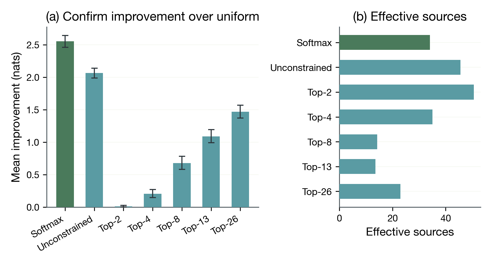
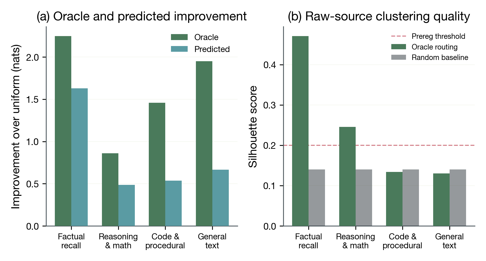
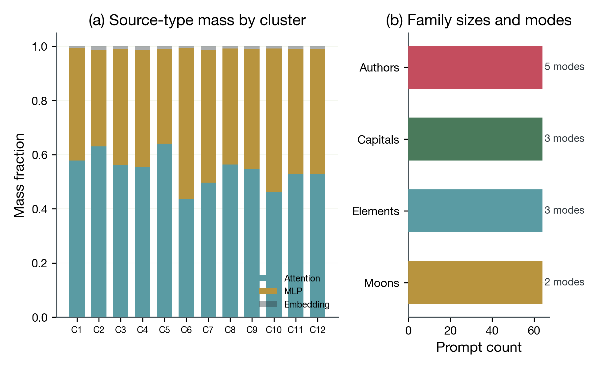
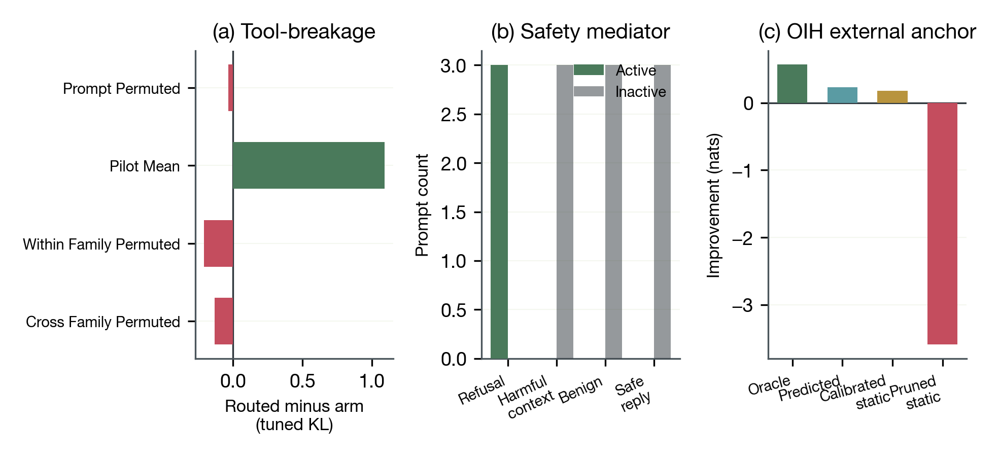

Standard transformers process inputs through a fixed sequence of layers, but the degree to which different layers contribute to each prediction varies with the input. We introduce oracle-alpha, an optimization-based method that recovers input-dependent effective depth mixtures from the frozen residual stream of google/gemma-2-2b without modifying model weights.
On a stratified confirm surface of 1024 prompts spanning four task strata, oracle routing improves next-token loss over uniform weighting by +1.6299 nats (95% CI [1.5865, 1.6758]; 1024/1024 prompts positive), and held-out predicted routing generalizes positively (+0.8292 nats; 958/1024 positive; $R^2 = 0.2392$). Softmax-constrained competitive routing outperforms matched unconstrained gating by +0.4888 nats (128/128 prompt-level wins), achieving this advantage with fewer effective sources (34.07 vs 45.59). Routing structure is non-random and task-conditioned, with strongest support in factual recall (silhouette 0.4709).
Extension lanes are bounded: tool-breakage evidence is positive against fixed-alpha controls (+1.0898) but mixed under dynamic donor counterfactuals, safety mediator activity remains refusal-collapsed, and the OIH external anchor is positive but calibration-sensitive (+0.0478 dynamic minus calibrated static). We frame these results as frozen-model effective depth-mixture analysis, not trained-router equivalence.
google/gemma-2-2b (2B parameters). Oracle-alpha is post-hoc optimization on cached representations. Routing weights establish association, not causal mechanism. Extension lanes (tool-breakage, safety, OIH) use small sample sizes (N = 12 to 50). Non-causal framing throughout.
Transformer language models process every input through the same fixed stack of layers. But not all layers contribute equally to every prediction. If this contribution pattern varies with the input, standard transformers contain a latent depth-routing signal that no one has systematically characterized.
Understanding this signal matters for three audiences: researchers designing adaptive-depth architectures (such as Attention Residuals or Mixture-of-Depths) need to know what routing structure already exists in standard models; interpretability researchers need tools to characterize how models allocate computation across depth; and practitioners considering layer pruning need to understand that depth value is input-dependent, not fixed.
We optimized per-sequence softmax-constrained routing weights (oracle-alpha) over the 53 frozen residual sources of google/gemma-2-2b on a stratified prompt surface of 1024 prompts across four task strata (factual recall, reasoning/math, code/procedural, general text). We compared routing regimes (softmax, unconstrained, top-k), analyzed task-conditioned routing structure, and evaluated three extension lanes (tool-breakage, safety alignment, external anchor).
google/gemma-2-2b. Single model, single architecture.Model: google/gemma-2-2b (2B parameters, 26 transformer layers, 53 residual sources). Frozen; no weight modification.
53 sources = 1 embedding output + 26 attention outputs + 26 MLP outputs.
Prompt surface: registry_v5, 256 pilot / 1024 confirm prompts across four task strata (factual recall, reasoning/math, code/procedural, general text). All method choices locked on pilot before confirm evaluation.
Oracle-alpha optimization: For each sequence, optimize $\mathbf{z} \in \mathbb{R}^{53}$ with $\boldsymbol{\alpha} = \mathrm{softmax}(\mathbf{z})$, minimizing cross-entropy of the routed output against original next-token predictions. Adam optimizer, 20 steps, lr=0.1, seed=11.
Regime comparison: Softmax-constrained (probability simplex), unconstrained ($\sigma(z_i)$ per source), and top-k ($k \in \{2, 4, 8, 13, 26\}$ with straight-through gradient estimator). Matched initialization ($\mathbf{z} = \mathbf{0}$).
Null baselines: Uniform ($\alpha_i = 1/53$), random Dirichlet, magnitude proportional, last layer only.
Extension lanes: Tool-breakage (tuned-lens KL divergence under routing), safety alignment (refusal/harmfulness direction localization on gemma-2-2b-it), OIH external anchor (MIB-compatible MCQA surface).
On the confirm tranche (N=1024), oracle-alpha routing improves mean next-token loss over uniform weighting by +1.6299 nats (95% bootstrap CI [1.5865, 1.6758]). All 1024 prompts show positive improvement.
| Baseline | Mean loss (nats) | Oracle advantage |
|---|---|---|
| Uniform | 4.7341 | +1.6299 |
| Random Dirichlet | 9.4581 | +6.3539 |
| Magnitude proportional | 6.9846 | +3.8804 |
| Last layer only | 20.9150 | +17.8108 |
| Oracle | 3.1042 | --- |
Held-out predicted routing yields +0.8292 nats over uniform (958/1024 positive; $R^2 = 0.2392$; mean JS divergence to oracle = 0.0985).

Softmax outperforms unconstrained gating by +0.4888 nats on every prompt (128/128 wins). The effective-source analysis reveals the mechanism: softmax uses 34.07 effective sources vs 45.59 for unconstrained. The simplex constraint forces sources to compete for weight, producing more selective and more useful routing. Effective sources = $2^{H(\alpha)}$ where $H$ is Shannon entropy. Higher values indicate more uniform weight distribution.

Factual recall achieves silhouette 0.4709 (vs 0.1401 random; 32/32 resamples oracle > random). Reasoning/math achieves 0.2456 (32/32 resamples). Code/procedural and general text do not exceed random controls.

Within factual recall (N=256), k=12 clustering produces near-perfect family purity: 255/256 prompts cluster with their semantic family. Route modes differentiate by prompt presentation format, not just factual content. Map-style capital queries route differently from quiz-style capital queries, consistent with different processing strategies for the same factual domain.

Oracle routing increases tuned-lens KL divergence by +2.9065 over original (all 10 route modes positive), and exceeds fixed pilot-mean-alpha by +1.0898. However, dynamic donor controls (prompt-permuted, within-family, cross-family) are mixed or slightly negative on the pooled metric. The fixed-alpha advantage supports route-specificity, but the mixed dynamic controls limit claims about matched routing superiority. Dynamic donors use seeded-derangement pairing (seed 13) to remove prompt-order artifacts. The mixed result persists after this correction.
Refusal direction localizes at layer 22 and harmfulness at layer 25 in gemma-2-2b-it, with near-orthogonal directions (cosine similarity = -0.0162). Behavioral validation is perfect (hit rate = 1.0, pass rate = 1.0). However, mediator-conditioned routing collapses to refusal-only: 3 active prompts are all refusal-labeled, with no role diversity expansion. We cannot claim routing differences distinguish harmful contexts from safe responses on the current surface.
On the external MCQA surface (N=50 confirm), predicted improvement over uniform is +0.2290 nats. The pruned-static baseline catastrophically fails (-3.5916 nats, 0/50 positive), motivating input-dependent routing. The calibrated static comparator (pilot-mean-alpha) achieves +0.1813, producing a dynamic-over-calibrated margin of +0.0478 nats. The margin is modest and calibration-sensitive: dynamic minus pruned-static = +3.82, but dynamic minus pilot-mean = +0.05, an 80x difference.
[1] Chen, G., Zhang, Y., Su, J., et al. (2026). Attention Residuals. arXiv:2603.15031. Moonshot AI / Kimi Team.
[2] Men, X., Xu, M., Zhang, Q., et al. (2024). ShortGPT: Layers in Large Language Models are More Redundant Than You Expect. Findings of ACL 2025. arXiv:2403.03853.
[3] Veit, A., Wilber, M. J., & Belongie, S. (2016). Residual Networks Behave Like Ensembles of Relatively Shallow Networks. NeurIPS 2016. arXiv:1605.06431.
[4] Schwartz, R., Stanovsky, G., Swayamdipta, S., Dodge, J., & Smith, N. A. (2020). The Right Tool for the Job: Matching Model and Instance Complexities. ACL 2020, 6640-6651.
[5] Schuster, T., Fisch, A., Gupta, J., et al. (2022). Confident Adaptive Language Modeling. NeurIPS 2022. arXiv:2207.07061.
[6] Elhoushi, M., Shrivastava, A., Liskovich, D., et al. (2024). LayerSkip: Enabling Early Exit Inference and Self-Speculative Decoding. ACL 2024.
[7] Raposo, D., Ritter, S., Richards, B., Lillicrap, T., Humphreys, P. C., & Santoro, A. (2024). Mixture-of-Depths: Dynamically Allocating Compute in Transformer-Based Language Models. ICML 2024. arXiv:2404.02258.
[8] Pagliardini, M., Mohtashami, A., Fleuret, F., & Jaggi, M. (2024). DenseFormer: Enhancing Information Flow in Transformers via Depth Weighted Averaging. NeurIPS 2024. arXiv:2402.02622.
[9] Shazeer, N., Mirhoseini, A., Maziarz, K., et al. (2017). Outrageously Large Neural Networks: The Sparsely-Gated Mixture-of-Experts Layer. ICLR 2017. arXiv:1701.06538.
[10] Fedus, W., Zoph, B., & Shazeer, N. (2022). Switch Transformers: Scaling to Trillion Parameter Models with Simple and Efficient Sparsity. JMLR, 23, 1-40. arXiv:2101.03961.
[11] Zhou, Y., Lei, T., Liu, H., et al. (2022). Mixture-of-Experts with Expert Choice Routing. NeurIPS 2022. arXiv:2202.09368.
[12] nostalgebraist (2020). Interpreting GPT: the Logit Lens. LessWrong blog post.
[13] Belrose, N., Furman, Z., Smith, L., et al. (2023). Eliciting Latent Predictions from Transformers with the Tuned Lens. arXiv:2303.08112. CoNLL 2023.
[14] Elhage, N., Nanda, N., Olsson, C., et al. (2021). A Mathematical Framework for Transformer Circuits. Transformer Circuits Thread, Anthropic.
[15] Meng, K., Bau, D., Andonian, A., & Belinkov, Y. (2022). Locating and Editing Factual Associations in GPT. NeurIPS 2022. arXiv:2202.05262.
[16] Meng, K., Sharma, A. S., Andonian, A., Belinkov, Y., & Bau, D. (2023). Mass-Editing Memory in a Transformer. ICLR 2023. arXiv:2210.07229.
[17] Geva, M., Schuster, R., Berant, J., & Levy, O. (2021). Transformer Feed-Forward Layers Are Key-Value Memories. EMNLP 2021. arXiv:2012.14913.
[18] Geva, M., Bastings, J., Filippova, K., & Globerson, A. (2023). Dissecting Recall of Factual Associations in Auto-Regressive Language Models. EMNLP 2023, 12216-12235. arXiv:2304.14767.
[19] Zou, A., Phan, L., Chen, S., et al. (2023). Representation Engineering: A Top-Down Approach to AI Transparency. arXiv:2310.01405.
[20] Arditi, A., Obeso, O., Syed, A., et al. (2024). Refusal in Language Models Is Mediated by a Single Direction. arXiv:2406.11717.
[21] Zhao, J., Huang, J., Wu, Z., Bau, D., & Shi, W. (2025). LLMs Encode Harmfulness and Refusal Separately. NeurIPS 2025. arXiv:2507.11878.
[22] Li, S., Yao, L., Zhang, L., & Li, Y. (2025). Safety Layers in Aligned Large Language Models: The Key to LLM Security. ICLR 2025. arXiv:2408.17003.
[23] Gemma Team, Google DeepMind (2024). Gemma 2: Improving Open Language Models at a Practical Size. arXiv:2408.00118.
[24] Mueller, A., Geiger, A., Wiegreffe, S., et al. (2025). MIB: A Mechanistic Interpretability Benchmark. ICML 2025. arXiv:2504.13151.
[25] Sun, W., Song, X., Li, P., Yin, L., Zheng, Y., & Liu, S. (2025). The Curse of Depth in Large Language Models. NeurIPS 2025. arXiv:2502.05795.
[26] Vaswani, A., Shazeer, N., Parmar, N., et al. (2017). Attention Is All You Need. NeurIPS 2017. arXiv:1706.03762.